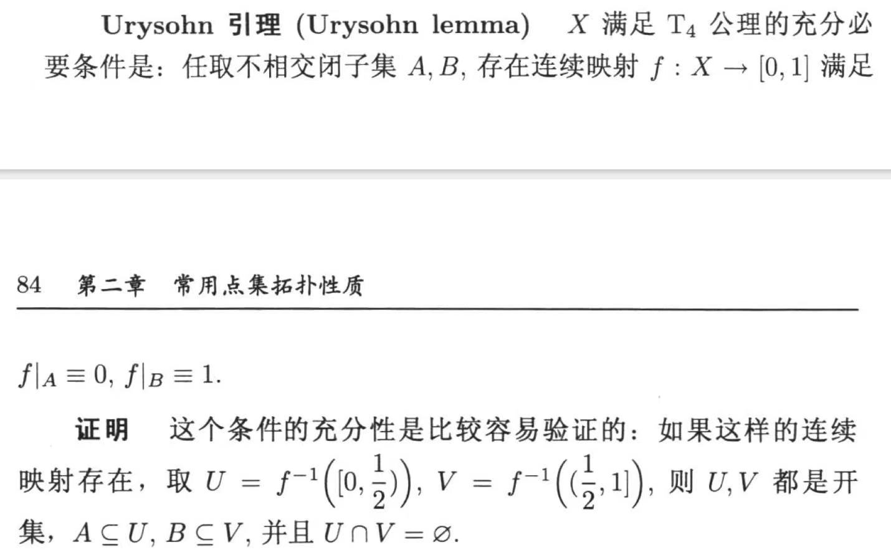
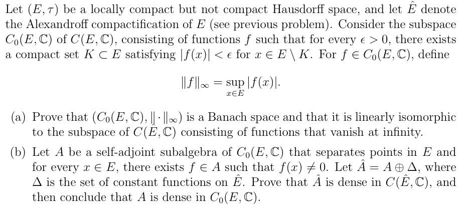
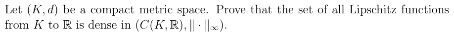

Stone-Weierstrass定理
整理自泛函分析(gl)笔记
足够强大的定理，用最少的条件推出最好用的稠密条件
封面图：X：@McLarenF1
符号和定义
代数$\mathcal{A}$，是指向量空间配备上乘积，$A\times A\to A\quad (a,b)\mapsto ab$，满足
$$a(bc)=(ab)c\quad a(b+c)=ab+ac\quad (b+c)a=ba+ca\quad \lambda(ab)=(\lambda a)b=a(\lambda b)$$
$\mathcal{A}$ separating，是指$\forall x,y\in E,\exists f\in\mathcal{A},\quad f(x)\neq f(y)$
$\mathcal{A}$是lattice，是指$\forall f,g\in \mathcal{A}\Rightarrow \max\{f,g\},\min\{f,g\}\in\mathcal{A}$
其实我不知道这和格这个命名有啥联系？
引理1
设$\mathcal{A}$是$C(E,\mathbb{R})$的闭子代数，那么$\mathcal{A}$是lattice。
思路：利用$[-1,1]$上多项式在连续函数空间中的稠密性逼近绝对值函数，再由闭性，极限也在子代数$\mathcal{A}$内
证明：注意到
$$\max\{f,g\}=\frac{f+g+|f-g|}{2},\quad\min\{f,g\}=\frac{f+g-|f-g|}{2}$$
所以仅需证$f\in\mathcal{A}\Rightarrow|f|\in\mathcal{A}$
由于$\mathcal{A}$是子代数，如果$f\in\mathcal{A},\quad p(x)=\sum_{k=1}^{n}a_kx^k$，那么$p(f)=\sum_{k=1}^{n}a_kf^k\in\mathcal{A}$
不妨设$||f||_\infty\le1$，取一个收敛到绝对值函数的多项式序列$(P_n)\subseteq P[-1,1],\quad P_n\to |·|$一致收敛。
那么
$$||P_n(f)-|f|~||_\infty=\sup_{x\in E}|P_n(f(x))-|f(x)|~|\le\sup_{t\in[-1,1]}|P_n(t)-|t|~|=||P_n-|·|~||_\infty\to 0$$
记$\tilde{P_n}=P_n-P_n(0)=\sum_{l=1}^n a_kx^k$，则
$$||\tilde{P_n}(f)-|f|~||_\infty\le||\tilde{P_n}-|·|~||_\infty\le||P_n-|·|~||_\infty+||P_n(0)||_\infty\to0$$
由于$\mathcal{A}$是闭的，$|f|\in\mathcal{A}$。
引理2
设$\mathcal{A}$是$C(E,\mathbb{R})$的子代数，满足
- $\mathcal{A}$ separating
- $\forall x\in E,\quad\exists f\in \mathcal{A},\quad f(x)\neq0$
则
- $\forall\alpha\in\mathbb{R},x\in E,\quad\exists f\in l\quad s.t. f(x)=\alpha$
- $\forall\alpha,\beta\in\mathbb{R},x\neq y\in E\quad\exists h\in\mathcal{A},\quad s.t.h(x)=\alpha~\&~ h(y)=\beta$
这说的就是可以根据两个点的要求找到$\mathcal{A}$中的某个函数
证明：对第一条，找出$g(x)\neq0$那么$f=\alpha g/g(x)$满足条件
对第二条，先取出$f(x)\neq f(y)$，然后分情况讨论
若$f(x)= 0,f(y)\neq0$，那么取$g\in\mathcal{A}$使得$g(x)\neq0$，解方程
$$\begin{cases} \lambda f(x)+\mu g(x) = \alpha \\ \lambda f(y)+\mu g(y) = \beta \end{cases}$$
解得的$\mu,\lambda$使得$\lambda f+\mu g$满足要求
若$f(x)\neq 0,f(y)\neq0$，那么解方程
$$\begin{cases} \lambda f(x)+\mu f^2(x) = \alpha \\ \lambda f(y)+\mu f^2(y) = \beta \end{cases}$$
系数行列式=$f(x)f(y)(f(x)-f(y))\neq0$，解出$\mu,\lambda$使得$\lambda f+\mu f^2$满足要求
Stone-Weierstrass定理(实)
设E是紧豪斯多夫拓扑空间，$\mathcal{A}\subseteq C(E,\mathbb{R})$是子代数，满足
- $\mathcal{A}$ separating
- $\forall x\in E,\quad\exists f\in \mathcal{A},\quad f(x)\neq0$
那么$A\subseteq\left(C(E,\mathbb{R}),||·||_\infty\right)$稠密
证明：假设$\mathcal{A}$闭（不闭的话就令$\mathcal{A}$为闭包），证明$\mathcal{A}=C(E,\mathbb{R})$
令$f\in C(E,\mathbb{R})$，由引理2可知$\forall x,y\in E,\exists h_{x,y}\in\mathcal{A}$使得$h_{x,y}(x)=f(x),h_{x,y}(y)=f(y)$。由连续性，给定$\varepsilon>0$，可以定义
$$U_{x,y}=\{z\in E|h_{x,y}(z)<f(z)+\varepsilon\}$$
是开的，并且$x,y\in U_{x,y}$。造一族开覆盖$E\subseteq\bigcup_{y\in E}U_{x,y}$，由于E是紧的，取出有限子覆盖$y_{n(x)}$使得$E\subseteq\bigcup_{i=1}^n(x) y_i$。
考虑$h_x=\min\{h_{x,y_1},...,h_{x,y_{n(x)}}\}$，由于$\mathcal{A}$是lattice，故$h_x\in\mathcal{A}$且$h_x<f+\varepsilon,f(x)=h_x(x)$
我们再用这个流程把上界控制一遍，定义
$$V_{x}=\{z\in E|h_{x}(z)>f(z)-\varepsilon\}$$
遍历x可以开覆盖E，取有限子覆盖下标为$x_1,...,x_m\in E$
令$h=\max\{h_{x_1},...,h_{x_m}\}\in\mathcal{A}$，那么在E上$f-\varepsilon<h<f+\varepsilon$，也即$||f-h||_\infty<\varepsilon$。由于$\varepsilon$是任意的，所以$f\in\bar{\mathcal{A}}=\mathcal{A}\Rightarrow \mathcal{A}=C(E,\mathbb{R})$
反例
定理中的两个条件都是必须的。
如果separating这个条件失效，那么首先紧豪斯多夫空间是T4可分（不交闭集有不交邻域）的，由Urysohn引理（必要性证明自己看尤承业p84，太长了，就是用等高线进行扩张）

可以看到任意两个闭子集都是可以用连续函数区分的，但是此时子代数无法区分，也就无法逼近了
如果$\mathcal{A}$中任意函数都$f(x)=0$那自然无法逼近非零常值映射了
Stone-Weierstrass定理(复)
设E是紧豪斯多夫拓扑空间，$\mathcal{A}\subseteq C(E,\mathbb{C})$是子代数，满足
- $\mathcal{A}$ separating
- $\forall x\in E,\quad\exists f\in \mathcal{A},\quad f(x)\neq0$
- $\mathcal{A}$自伴随（在复共轭下封闭）
那么$A\subseteq\left(C(E,\mathbb{C}),||·||_\infty\right)$稠密
证明：令$Re\mathcal{A}=\{Ref|f\in\mathcal{A}\}$，则$\forall f\in\mathcal{A},Ref=\frac{f+\bar{f}}{2}\in Re\mathcal{A},Imf=\frac{f-\bar{f}}{2i}\in Re\mathcal{A}$，此时$f=Ref+iImf$，由于自伴随，$\mathcal{A}=Re\mathcal{A}+iRe\mathcal{A}$。注意到$Re\mathcal{A}\subseteq C(E,\mathbb{R})$满足S-W定理实情形，故稠密，故$\mathcal{A}=Re\mathcal{A}+iRe\mathcal{A}\subseteq C(E,\mathbb{C})$稠密。
用法
证明紧豪斯多夫空间上的子代数在连续函数中稠密基本上都能用

